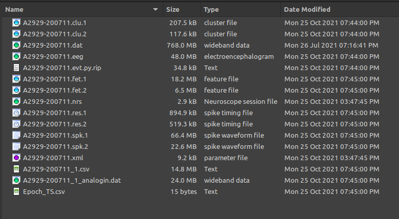
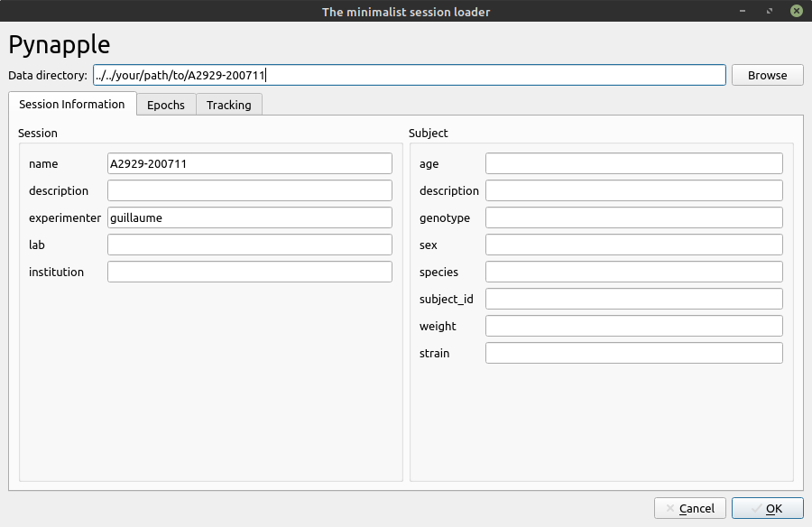
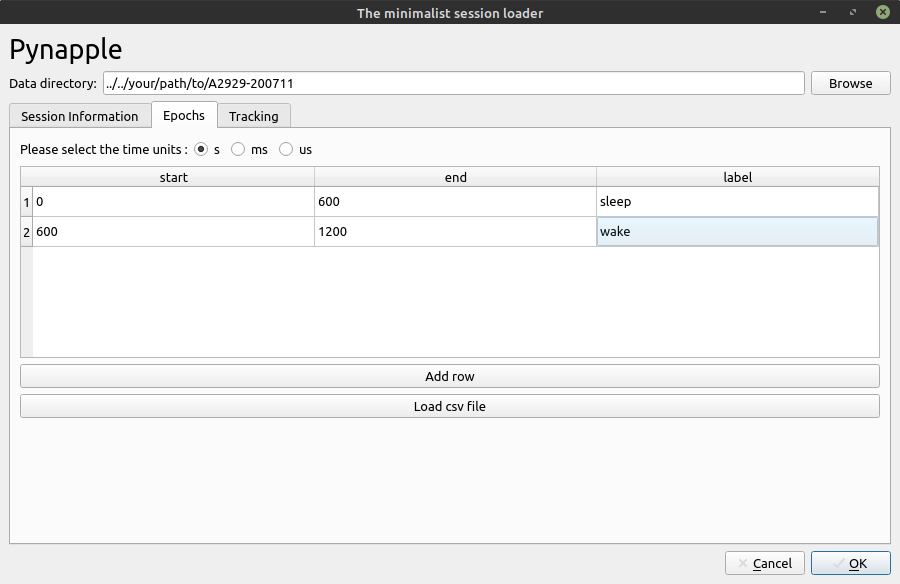
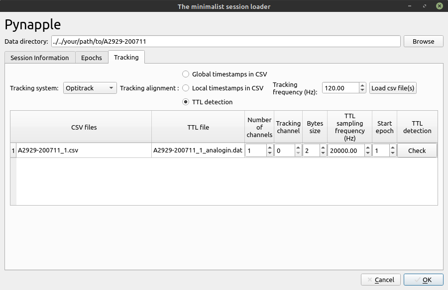
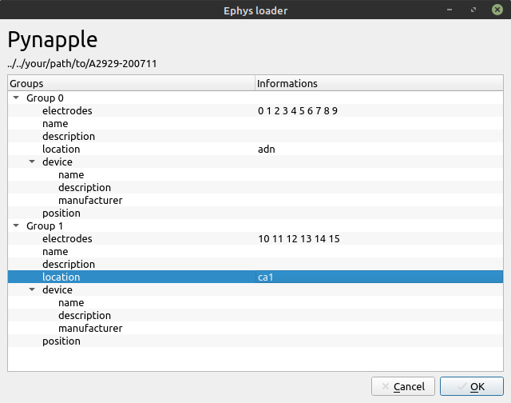
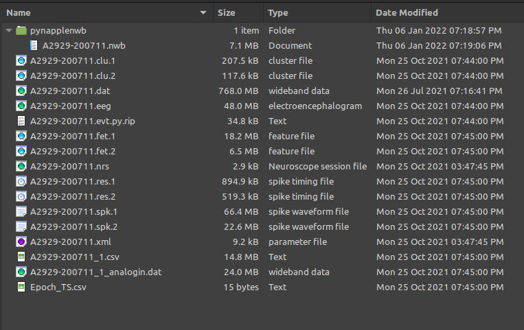

Tutorial
In this example dataset, the data contains a sample recording from the anterodorsal nucleus of the thalamus and the hippocampus, with both a sleep and a wake phase. It contains both head-direction cells (i.e. cells that fire for a particular direction of the head in the horizontal plane) and place cells (i.e. cells that fire for a particular position in the environment).
The example dataset looks like this:

Preprocessing of the data was made with Kilosort 2.0 and spike sorting was made with Klusters.
Tracking of the animal was done with Motive Optitrack. The file A2929-200711_1.csv contains the tracking data (both position and rotation of the head of the animal).
The binary file A2929-200711_1_analogin.dat contains the TTL pulses tracking the camera frames.
This tutorial demonstrates how to load data with nwbmatic.
Import nwbmatic
Session loader
The first step is to call the function load_session. It will then open a GUI for filling manually the information. The following screenshots show what parameters to use.
Session Information

The second step is to provides information about the session and the subject. All the fields shown are suggested by the NWB format (see here and here).
Epochs

The epochs tab loads the epochs within the session (typically wake and sleep). In this case, we load the file Epoch_Ts.csv in the data folder. The first column contains the start of the epoch and the second column contains the end of the epoch.
If the CSV file contains a third column with an epoch label, the loader will automatically write it in the label column. Otherwise, it is necessary to manually write the epoch labels.
Tracking
The tracking tab allows to load tracking data saved with a CSV file. Reading a CSV file is always a challenge when the header is unknown. The default csv file should contains only one row for the header with the column names. The first column should be the time index in seconds. Other formats are DeepLabCut and Optitrack.
Frame alignement can vary as well. Pynapple offers three ways to align the tracking frames :
Global timestamps
The time column of the CSV file contains the timestamps aligned to the global timeframe of the session.
Local timestamps
The time column of the CSV file contains the timestamps aligned to one epoch. In this case, the user should select which epoch.
TTL detection
A binary file containing TTL pulses for each tracking frame is located within the folder and can be loaded. Alignement is made with TTL detection.
In this example session, Tracking was made with Optitrack and TTL pulses were written to an analogin file recorded by an Intan RHD2000 recording system. The parameters for the tracking tab are shown below.

Ephys loader
The next step is specific to NeuroSuite. In this case, 2 electrophysiological probes were implanted, one to the ADN and another to the CA1. This step allows to label groups of electrodes as shown below.

NWB file
If successful, a NWB file should be created in session_folder/pynapplenwb/session_name.nwb

Calling the function load_session should directly read the NWB file and bypass the GUI loader.
In this case, the data that can be used for analysis are spikes, position and epochs.
spikes = data.spikes
position = data.position
epochs = data.epochs
print(spikes, '\n')
print(position, '\n')
print(epochs, '\n')
Index Freq. (Hz) group
------- ------------ -------
0 7.3 0
1 5.73 0
2 8.12 0
3 6.68 0
4 10.77 0
5 11 0
6 16.52 0
7 2.2 1
8 2.02 1
9 1.07 1
10 3.92 1
11 3.31 1
12 1.09 1
13 1.28 1
14 1.32 1
rx ry rz x y z
Time (s)
670.64070 0.343163 5.207148 5.933598 -0.042857 0.425023 -0.195725
670.64900 0.346745 5.181029 5.917368 -0.043863 0.424850 -0.195110
670.65735 0.344035 5.155508 5.905679 -0.044853 0.424697 -0.194674
670.66565 0.322240 5.136537 5.892457 -0.045787 0.424574 -0.194342
670.67400 0.315836 5.120850 5.891577 -0.046756 0.424563 -0.194059
... ... ... ... ... ... ...
1199.96160 6.009812 3.665954 0.230562 0.011241 0.037891 -0.001479
1199.96995 6.014660 3.634619 0.260742 0.010974 0.038677 -0.002370
1199.97825 6.031694 3.617849 0.276835 0.010786 0.039410 -0.003156
1199.98660 6.040435 3.609446 0.287006 0.010661 0.040064 -0.003821
1199.99495 6.050059 3.609375 0.293275 0.010624 0.040568 -0.004435
[63527 rows x 6 columns]
{'sleep': start end
0 0.0 600.0, 'wake': start end
0 600.0 1200.0}